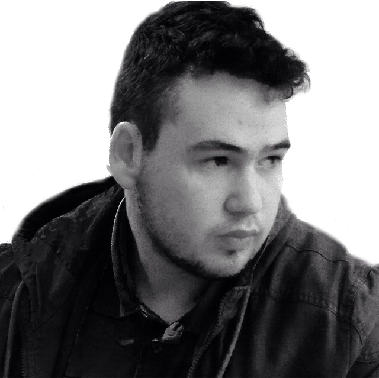
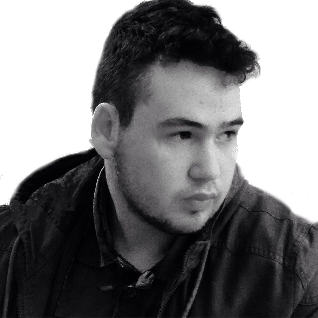

Daniel Molev Shtieman
Future Software Engeeniner
Future Software Engeeniner
Hello, and wellcome to my website, if your looking for my portfolio or resume please click on "PORTFOLIO" tab. My name as you guessed it is Daniel Molev and, I am currently studying Computer Science, Mathematics, and Statistic at the University of Toronto. I have no idea where to start but let's start with what’s unique about me. Like the man in Dos Equis beer commercials I like to Travel the World and strive to become a jack of all trade. For intance , I build myself a Metal Foundry and use it to melt aluminum cans into an aluminum bar, just because I watched youtube video and thought it was cool. I still can't understand how at the time my parents allowed me to do it in there backyard.
Now, if you can't tell by now I am quite the oppeset of funny if anything I am extremly serious most of the time. Ussally at least that how my friends would describe me but regardless I do have my funny momments too. For instance, there was that one time I pretended I was a turkey or the time I had the idea of creating hamster water bottle but for babbies. My hummor I woulds say at the very least is starnge so, if you ever get to meet me please don't hate on me, I do have a delicate heart <3.
I feel it’s only fair if you read this far you should probably know some of my strengths and weaknesses. Let’s start with my we strengths, one of my best qualities is that I think outside the box. I can give many such examples, but my favorite example is when I was a kid at elementary school during the famous egg drop project. Everyone built as lightweight of a contraption as possible, such as using 2 pillows or using a parachute. What I did is fill a can with water (cold water I am not a cheater) and put smaller can inside with the egg. At the time everyone laughed at me and said it wouldn’t work but guess what it worked. If you are reading this what I want you to learn from this story is that working with me you have to have an open mind.
As for my weakness, one of my biggest problems is that I have difficulty focusing on a single task. Like my interests, one minute I decide to melt aluminum the next minute I like to watch and paint a Bob Ross painting, and next really any random thing you can think of. If you want to work with me successfully, I work best when I am given one task at a time instead of everything at once. Otherwise, I will work on everything at once and get nothing done.
Java; Python; C/C++ ;
Web Design
Photoshop